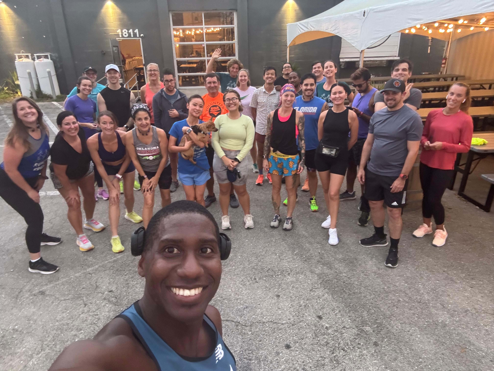

Running Friends of Southwest Florida
A Drinking Group with a Running problem
Monday Group Run
Joins us at Fleet Feet Fort Myers every Monday at 6:30 pm for a 5k run through the John Yarbrough Linear Park. We usually hang out at Burntwood Tavern afterwards. All levles are welcome!

Thursday Group Run
Joins us at Millernial brewery every Thusday at 6:15pm. We run through the downtown area, including the Edison Bridge in order to get in our weekly "hill workout". Enjoy a discount on Millenial brewery Beers after the run. There is also a food truck if you get hungry after your run. All levels are welcome on this run. We usually do a 5k. Some do less or more. All paces are welcome.
Monday Group Run
Joins us at Fleet Feet Fort Myers every Monday at 6:30 pm for a 5k run through the John Yarbrough Linear Park. We usually hang out at Burntwood Tavern afterwards. All levles are welcome!
Thursday Group Run
Joins us at Millernial brewery every Thusday at 6:15pm. We run through the downtown area, including the Edison Bridge in order to get in our weekly "hill workout". Enjoy a discount on Millenial brewery Beers after the run. There is also a food truck if you get hungry after your run. All levels are welcome on this run. We usually do a 5k. Some do less or more. All paces are welcome.